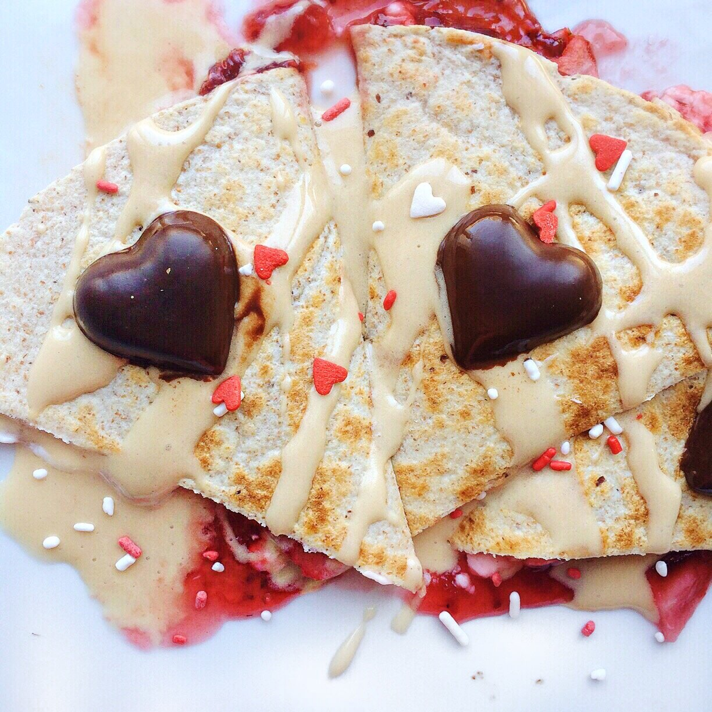
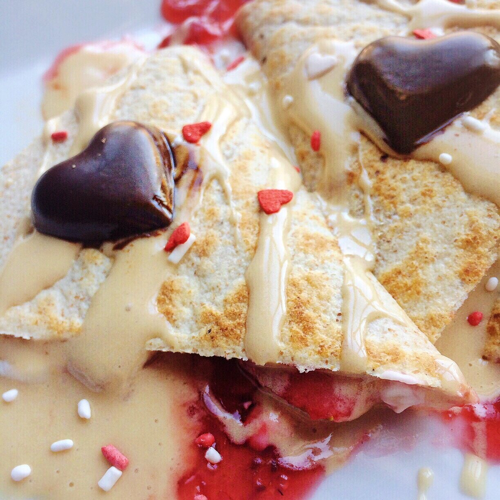

Strawberries and Cream Quesadilla (vegan, gluten free)


Oh look more Valentine's Day food! Let me know when I'm overboard with valentines spirit but clearly I'm having fun.
Strawberries and Cream quesadilla. Yeahh this is the best thing I've tasted in a while. I used to make soo many sweet panini's & quesadillas but I have no idea why I stopped. This was fantastic.
Did you see the video I posted on youtube? Super short video, but an important message I wanted to put out there. Whether you are single or in a relationship this valentine's day, there's love for everyone! No need to feel left out or obligated to go on a date just because. Love your friends, love your family, love yourself. It feels great. Although I've gone through some crazy hectic stuff over the last 6-8 months...everything feels so good right now. May not have turned out how I expected, but absolutely nothing is wrong with that. I'm in a happy place. :) Happy vday friends.
Strawberries and Cream Quesadilla
Serves: 1
-
1 tortilla of choice
-
3-4 strawberries, sliced
-
2 TBSP strawberry jelly
-
2 TBSP dairy free cream cheese (I use Tofutti)
Inside of a tortilla, spread the cream cheese and jelly inside; place the strawberries on top of the spread. Then fold the tortilla on itself to completely seal the inside contents. Place the tortilla in a large pan, cooking over a medium heat. Once one side is lightly browned, flip, and brown the other side. Cut and enjoy!
I topped mine with dark chocolate hearts (melted chocolate into molds I have) and a Nuzest plant based protein syrup that I'm addicted to right now (2 TBSP syrup of choice, 1/2 serving Nuzest protein, and 1/2 TBSP nut butter of choice).